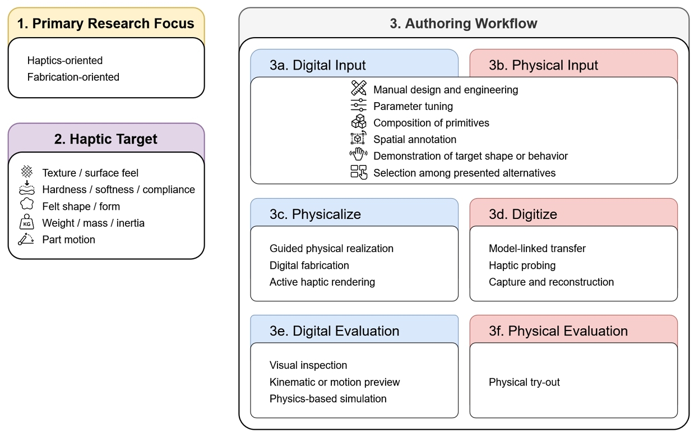
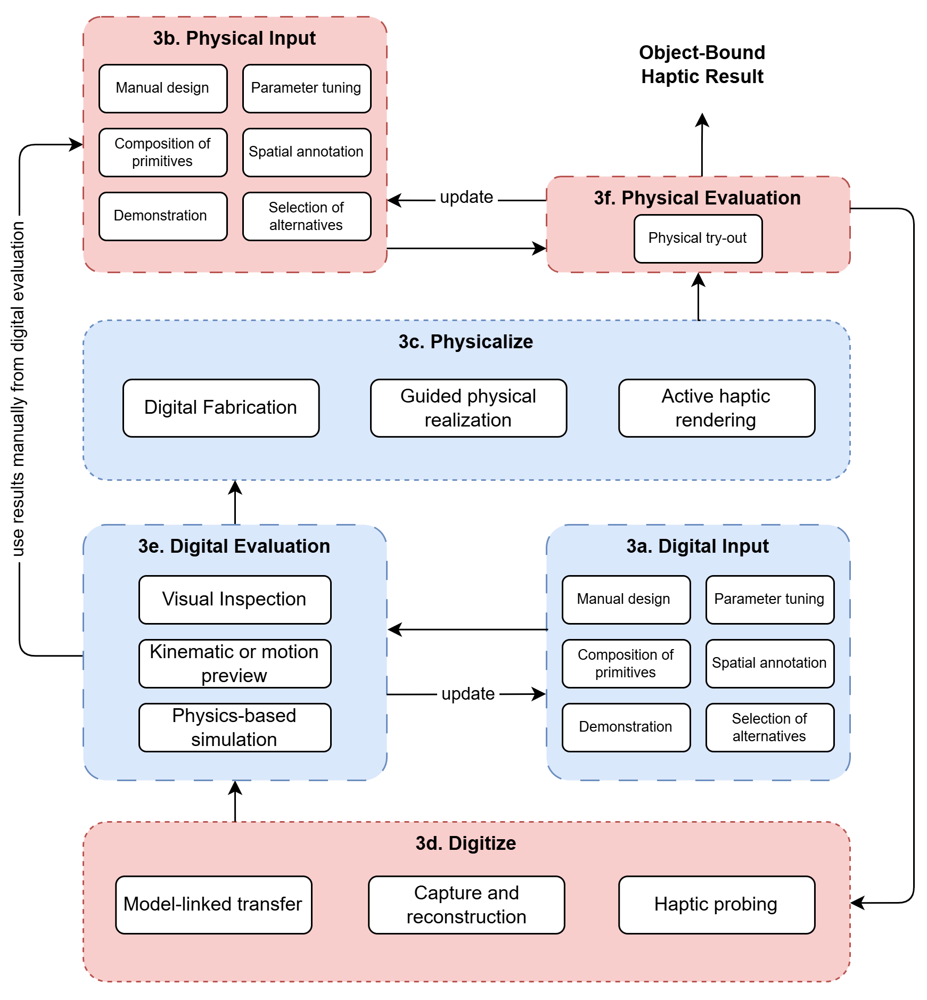
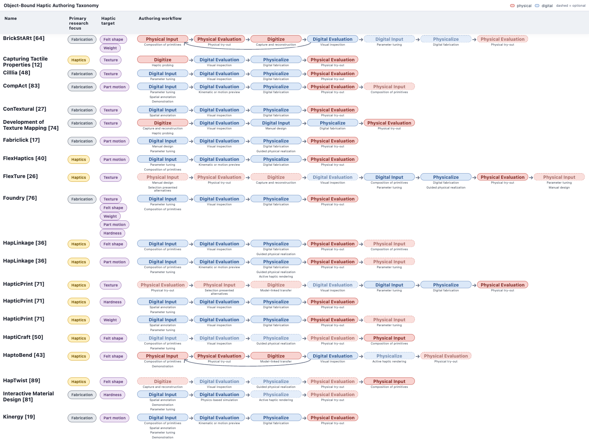
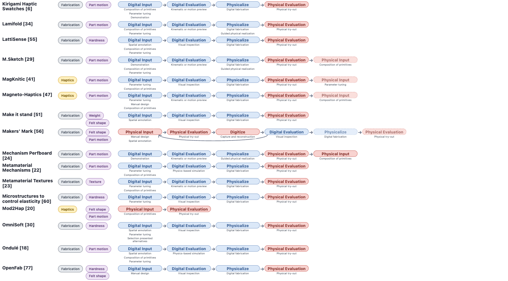
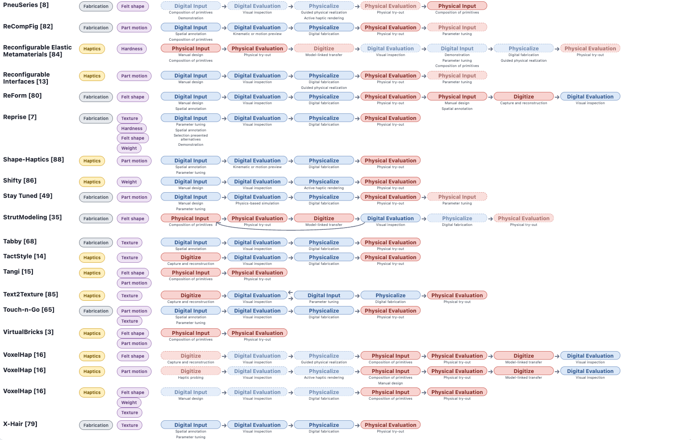
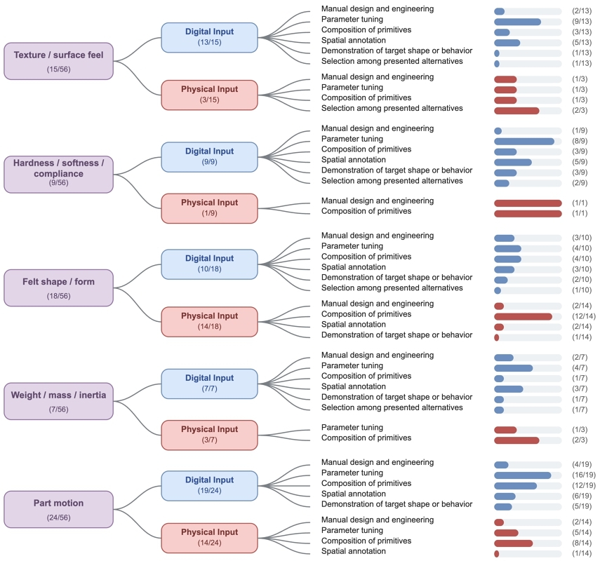
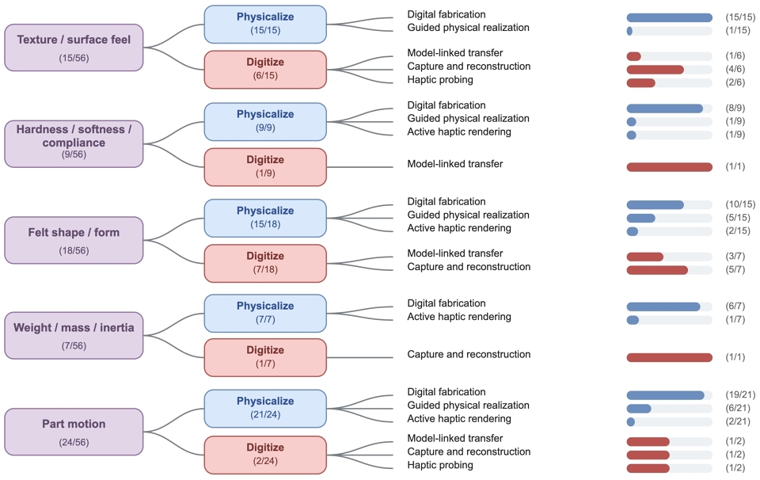
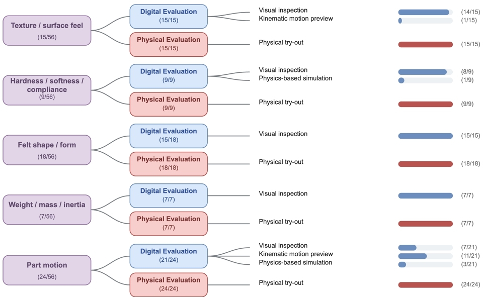

Authoring Object-Bound Haptics: A Taxonomy of Workflows for Engineering Tactile and Kinesthetic Behavior
DOI: https://doi.org/10.1145/3861188.3861227
MUM '26: 25th International Conference on Mobile and Ubiquitous Multimedia, Glasgow, United Kingdom, December 2026
Abstract
Haptic experiences in physical artifacts emerge not only from programmable effects, but also from artifact-specific properties such as geometry, materials, mechanical structure, physical configuration, and embedded actuation. We introduce object-bound haptics as a framing for this complementary space and define object-bound haptic authoring as the processes through which such tactile and kinesthetic behavior is specified, realized, evaluated, and refined. Relevant work is distributed across haptics, digital fabrication, tangible interaction, computational design, and engineering, and is rarely considered as a coherent authoring problem. To characterize this space, we review 51 papers and analyze its authoring workflows. From this corpus, we develop a taxonomy describing primary research focus, haptic target, and the sequence of digital and physical authoring, realization, and evaluation stages. Our analysis reveals a predominantly strong support for moving from digital representations to physical artifacts, comparatively limited support for transferring realized haptic behavior back into digital authoring, and a reliance on visual inspection and direct physical try-out for evaluation. We further synthesize recurring workflow structures into a unified model of object-bound haptic authoring.
ACM Reference Format:
Maties Claesen, Davy Vanacken, and Raf Ramakers. 2026. Authoring Object-Bound Haptics: A Taxonomy of Workflows for Engineering Tactile and Kinesthetic Behavior. In 25th International Conference on Mobile and Ubiquitous Multimedia (MUM '26), December 01–04, 2026, Glasgow, United Kingdom. ACM, New York, NY, USA 19 Pages. https://doi.org/10.1145/3861188.3861227
Introduction
Touch is central to how people experience physical artifacts [46]. The roughness of a surface, the softness of a material, the resistance of a slider, the snap of a latch, the weight of a prop, or the shape of a graspable object can determine whether an artifact feels usable, convincing, safe, expressive, or high quality. These tactile and kinesthetic qualities are not merely by-products of physical design. In many interactive artifacts, they are part of the intended user experience. Yet haptic qualities can be difficult to author [54, 57, 62]. Unlike visual properties, they are not fully captured by what an artifact looks like on screen [30]. Characteristics such as stiffness, friction, force, mass, texture amplitude, material distribution, or mechanism geometry can only be partially represented through traditional digital representations, such as parameter values, graph plots, or 3D renderings. As a result, studies of haptic design practice [57, 62] describe designers moving between digital models, simulations, physical prototypes, fabrication settings, and real-world testing to evaluate and refine intended haptic behavior.
Prior taxonomies [54] on haptic authoring have largely focused on programmable haptic output devices, such as vibrotactile actuators, force-feedback devices, wearables, or mid-air haptics. We refer to this traditional style of haptic authoring as haptic-effect authoring. These systems allow for authoring and testing haptic effects by composing timelines [11, 25, 69, 73], keyframes [28, 58, 59], libraries [10, 61, 63, 86], procedural models [5, 37, 70], and increasingly natural-language interfaces [38, 66].
A complementary body of work instead foregrounds the physical artifact and the properties through which its haptic behavior emerges. This work is distributed across engineering, digital fabrication, tangible interaction, virtual reality, and computational design, and is often not explicitly framed as haptic research. Engineering has long treated properties such as stiffness, friction, compliance, tolerance, material composition, and mechanism geometry as editable design variables, while advances in digital fabrication, HCI, and rapid prototyping have made such properties increasingly accessible as variables for designing felt experience [6, 15, 18, 27]. In these systems, haptic behavior is authored not only by programming an actuator signal, but by changing, for example, geometry, material composition, fabrication parameters, mechanical structure, physical configuration, and embedded actuation. We refer to this broader body of work as object-bound haptics: haptic behavior that is intentionally realized through artifact-specific properties.
In physical artifacts, physical properties shape both functional performance and felt experience. We focus on approaches that make intended tactile and kinesthetic behavior an explicit design concern. Bringing these approaches together allows us to examine how haptic intent is translated into physical design choices, and how the resulting behavior is evaluated and refined.
Object-bound haptic authoring can pose a particular workflow challenge because the intended haptic behavior often becomes fully experienceable only after the artifact has been physically realized [57, 62]. Authoring may therefore require repeated movement between digital representations, fabrication or construction, physical evaluation, and subsequent refinement. These practices are distributed across several research communities and are rarely considered together as haptic authoring.
To understand how object-bound haptic behavior is authored, realized, evaluated, and refined, we focus specifically on object-bound haptic authoring workflows reported in the research literature as a common lens through which otherwise heterogeneous authoring methods can be compared. While authoring workflows for haptic effects have previously been systematically characterized [54], comparable understanding is lacking for object-bound haptics. Examining workflows captures not only how haptic intent is specified, but also how designs move between digital and physical representations, become physically experienceable, and are evaluated and refined. A workflow-level taxonomy couples what is authored with how digital and physical stages are sequenced, making systems from different communities comparable and unsupported transitions visible. Systematically analysing and cataloguing these workflows across research communities allows us to identify recurring authoring strategies, patterns of digital and physical iteration, and underexplored methods or potential gaps in current authoring support for object-bound haptics.
We therefore ask: How does existing research support the authoring of object-bound haptic qualities, and what recurring targets, workflows, and tooling approaches characterize this work?
We make these contributions. First, we introduce object-bound haptic authoring as a framing for unifying work across digital fabrication and mechanism engineering on the one hand, and haptic research on the other hand. Second, through a structured cross-disciplinary review and analysis of existing object-bound haptic authoring approaches, we develop a taxonomy that characterizes recurring authoring workflows and how haptic behavior is specified, physically realized, evaluated, and refined. The taxonomy enables comparison at the workflow level and exposes unsupported digital-physical transitions. Third, we use this synthesis to identify recurring challenges and opportunities for future object-bound haptic authoring and for closer integration with haptic-effect authoring.
Object-Bound Haptics within the Haptic Authoring Landscape
Building on the distinction of the two haptic authoring approaches, we use haptic-effect authoring to refer to approaches that primarily foreground a renderable haptic effect and the representations or parameters through which that effect is specified. This space has been systematically characterized in prior work [54]. We use object-bound haptic authoring to refer to the processes and tools through which artifact-specific tactile or kinesthetic behavior is intentionally specified, manipulated, physically realized, evaluated, and refined. We use object broadly to include physical and hybrid artifacts, object parts, surfaces, material samples, mechanisms, props, proxies, and assemblies. We reserve the term for work in which felt behavior is an explicit design concern rather than an incidental consequence of designing a physical object.
The two orientations overlap and should not be understood as active versus passive haptics. Object-bound artifacts may contain active components, while programmable haptic devices may be used to preview behavior [80] that is later realized through fabricated materials or mechanisms. Nor does the distinction separate virtual from physical applications, since both orientations occur in either setting [45, 57]. The distinction instead concerns what is treated as part of the authored haptic system. Haptic-effect authoring foregrounds a renderable effect and its parameters, while object-bound haptic authoring additionally foregrounds the artifact-specific properties through which the behavior is physically realized.
This difference also shapes the authoring process. Haptic-effect authoring has explored expressive and higher-level representations, rapid replay, and reusable effects across interactions or renderers. Object-bound authoring often requires manipulating geometry, materials, mechanisms, fabrication, or physical configuration. Because evaluating or changing these properties may require physical adjustment or fabrication, iteration can be more costly and the sequencing of digital and physical authoring stages becomes particularly important.
We therefore examine object-bound haptic authoring as a coherent authoring problem, complementing existing accounts of haptic-effect authoring by characterizing how artifact-specific haptic behavior is specified, physically realized, evaluated, and refined.
Concrete examples clarify this distinction. In HapticPrint [71], designers modify surface geometry and internal structure to shape the texture, compliance, and weight characteristics of a physical artifact. The artifact's physical construction is therefore part of the authored haptic system. By contrast, Macaron [59] specifies vibration intensity and frequency over time for playback through an existing actuator. The authored result is a renderable effect. Embedded actuation is possible for object-bound haptics as these may change the structure of the object itself. In Shifty [85], the mechanism and movable mass are engineered as part of the physical proxy, allowing actuation to change its mass distribution and resulting kinesthetic behavior.
Related Work
Our work builds on two bodies of literature: research on haptic perception and object properties, and prior work on haptic authoring and classification.
Haptic Perception and Object Properties
Haptic perception involves actively exploring physical properties of objects through touch and movement. Lederman and Klatzky [33] distinguish substance-related properties such as texture, hardness, and weight, structure-related properties such as shape, and functional properties such as part motion. ISO 9241-910 [21] similarly distinguishes geometric and material properties within tactile and kinesthetic interaction. These accounts provide a perceptual basis for the haptic targets used in our taxonomy, but do not address how such properties are specified, physically realized, evaluated, and refined during authoring.
Haptic Authoring and Existing Taxonomies
Existing haptic classifications organize systems according to perceptual or interaction roles [9, 31], technology and physical realization [4, 53], or the fidelity of the resulting feedback [44]. These frameworks characterize what haptic systems produce and how their output can be understood, but generally do not capture the authoring process through which a desired haptic behavior is created.
Research on haptic authoring more directly examines this process. Studies of haptic practice describe recurring design activities and challenges [57, 62], while Regimbal et al. [54] characterize authoring tools according to dimensions such as hardware, design approach, interface, and playback. This work primarily concerns haptic effects rendered through programmable output technologies. Such systems often support rapid iteration between specification and physical playback, while object-bound haptic authoring additionally requires the artifact-specific geometry, materials, mechanisms, or physical configuration through which the behavior is realized.
Adjacent fabrication research examines how designers move between digital representations and physical artifacts [52], but does not organize these workflows around their intended haptic outcomes. Our work therefore complements both perspectives by characterizing object-bound haptic authoring as a complete workflow spanning specification, digital and physical representations, physical realization, evaluation, and refinement. Compared with existing classifications, which describe what haptic systems produce or which authoring tools exist, our taxonomy classifies complete workflows by what is authored and how digital and physical stages are sequenced, which allows comparing systems at the workflow level and locating unsupported transitions. This allows systems from haptics, fabrication, and tangible interaction to be compared on common terms, and reveals where digital and physical stages are well connected and where transitions or forms of evaluation are poorly supported, patterns that tool- or output-centred classifications cannot expose.
Review and Taxonomy Development
To develop a taxonomy grounded in existing object-bound haptic authoring practice, we conducted an interpretive review of relevant systems and authoring workflows. The review served two purposes: to construct a broad corpus that captures object-bound haptic authoring across research communities, including work that is not explicitly framed as haptic research, and to identify recurring authoring dimensions and workflow structures through iterative coding.
Scope and Inclusion Criteria
We operationalized the scope of the review using the definition of object-bound haptic authoring introduced in Section 2. We included contributions that intentionally support the authoring or engineering of haptic behavior through properties of a physical or hybrid artifact.
We include a contribution when it meets the following criteria:
- The intended haptic outcome is bound to a physical or hybrid artifact, such as an object, object part, mechanism, surface, material configuration, or proxy, rather than being rendered solely through a general-purpose haptic output device.
- One or more artifact-specific properties are intentionally treated as design variables that meaningfully contribute to the haptic outcome. These properties may include geometry, material composition, surface structure, mass distribution, mechanical behavior, assembly, physical configuration, fabrication parameters, or embedded actuation.
- The work contributes, describes, or exposes an authoring or engineering workflow through which the object-bound haptic behavior is specified, manipulated, predicted, physically realized, evaluated, or refined.
These criteria require the haptic behavior of the artifact to be an explicit design concern rather than an incidental consequence of designing a physical object. General-purpose CAD modelling, fabrication, or engineering work is therefore not included solely because the resulting object can be touched or because its physical properties may influence the user experience. This boundary is particularly important for haptic aspects involving shape, since the geometry of an object can be experienced both visually and through touch and manipulation. We include shape-oriented work only when the physically perceived shape is intentionally treated as a tactile or kinesthetic outcome, which we later refer to as felt shape / form. HapTwist [88] and StrutModeling [35] therefore fall within scope as their resulting geometry is explicitly considered in terms of how the object is physically experienced. In contrast, general-purpose CAD systems [74] are excluded.
A system can contribute an object-bound haptic artifact without exposing how its haptic behavior is authored. Snake Charmer [2] uses a robotic arm to position textured physical surfaces at the location of virtual objects, so that users can touch them in VR. It contributes an object-bound haptic system, the textured surfaces, but does not present an authoring system for them, and is therefore not aligned with our inclusion criteria.
Corpus Construction
We followed a literature review process with interpretive coding [77] and began by constructing a broad corpus of systems, tools, and workflows concerned with authoring object-bound haptics. Literature discovery took place between 2024 and August 2026, without restrictions on publication year. An initial scoping phase across haptic authoring was used to identify established work, relevant terminology, and the boundaries between object-bound authoring and haptic effect authoring. We expanded this initial collection through Google Scholar and ACM Digital Library searches, iteratively broadening the search vocabulary with terminology encountered in relevant publications. This included terms describing haptic qualities, artifact types, authoring activities, and realization methods, which subsequently informed the structured searches described below. Because relevant contributions are distributed across haptics, fabrication, tangible interaction, virtual reality, and mechanical design, and frequently do not describe themselves as haptic-authoring research, we subsequently used similarity-based exploration and backward and forward citation searches. Using ResearchRabbit, we explored publications related to the seed papers and their citation networks, assembling approximately 942 candidate records. Titles and abstracts were examined to identify potentially relevant contributions. We also manually browsed proceedings from selected haptics, HCI, fabrication, and virtual-reality venues, including ACM CHI, ACM UIST, ACM TEI, ACM DIS, ACM MUM, ACM VRST and ACM SCF.
Finally, we conducted structured searches in the ACM Digital Library and IEEE Xplore by combining terms describing the intended haptic quality, the type of physical artifact, the authoring activity, and the method used to realize the artifact. These terms included haptic, tactile, kinesthetic, texture, stiffness, and compliance; object, proxy, material, surface, and mechanism; authoring, design, prototyping, tuning, optimization, and inverse design; and digital fabrication, 3D printing, multi-material fabrication, and compliant mechanisms. Retrieved results were screened against the inclusion criteria described above. Given the interdisciplinary nature of object-bound haptic authoring and the varying terminology used across research communities, we combined structured database searches with purposive literature discovery [1, 67] through citation-network exploration and targeted venue browsing. Records were screened by title and abstract against the inclusion criteria, followed by full-text assessment of potentially eligible publications. Publications retained after this initial screening were subsequently assessed in full against the inclusion criteria.
Our literature search identified 2,150 records through ResearchRabbit (n = 942), structured database searches (n = 1,162), and supplementary citation and venue searches (n = 46). After removing 263 duplicates, 1,887 unique records underwent title and abstract screening, of which 1,705 were excluded. The remaining 182 publications were assessed in full against our inclusion criteria. Of these, 131 were excluded because they did not meet the criteria for object-bound haptic authoring. The final corpus comprised 51 papers, from which we identified 56 distinct authoring workflows.
The resulting corpus comprised 51 papers on object-bound haptic authoring. Most contributions appeared during or after 2010, consistent with the broader growth of haptic-authoring research reported by Regimbal et al. [54]. Our search focused on haptics, HCI, fabrication, and virtual-reality literature. The corpus therefore does not fully capture practice in domains where haptic quality has long been engineered, such as automotive interiors [32, 72], which we did not systematically consider.
Coding and Analysis
Object-bound haptics authoring workflows formed our unit of analysis. Each paper in our corpus presents at least one workflow. We coded multiple workflows for a single paper when the work exposed substantially different authoring processes, either for the same haptic outcome or for different outcomes. Conversely, when several haptic qualities were addressed through the same underlying authoring process, we treated these as a single workflow.
The corpus was analyzed through several stages of iterative qualitative coding. One author first conducted open coding on a subset of 17 contributions. This stage identified provisional codes for recurring authoring activities and workflow elements, including parameter editing, demonstration of target haptic intent, simulation, optimization, fabrication, physical configuration, embodied testing, and post-fabrication fine-tuning of haptic results. The authors then collectively reviewed the initial codes, consolidated overlapping concepts, clarified distinctions, and developed a shared codebook.
After establishing the codebook, one author performed focused coding across the complete corpus. During coding, cases that did not fit the existing scheme were discussed, the codebook was iteratively refined, and previously coded contributions were revisited to maintain consistency. The corpus was coded by a single author, which may bias code assignment. To mitigate this risk, a second coder independently reviewed a subset of the coded corpus, 21 workflows, including contributions with varying workflows. Discrepancies were discussed and resolved through consensus, and the codebook was refined accordingly.
The resulting codebook captured three complementary aspects of object-bound haptic authoring: the research perspective from which a contribution approached the problem, the haptic qualities intentionally being authored, and the sequence of authoring, realization, and evaluation activities that constituted each workflow. These aspects form the three dimensions of the taxonomy presented next.
The Object-Bound Haptic Authoring Taxonomy
Our taxonomy characterizes object-bound haptic authoring through three complementary dimensions (Figure 1). Primary research focus distinguishes haptics- and fabrication-oriented contributions and is coded at the paper level. Haptic target captures the tactile or kinesthetic qualities intentionally being authored and may receive multiple labels within a workflow. Authoring workflow captures the ordered sequence of digital and physical stages through which haptic behavior is specified, realized, evaluated, and refined. Both Haptic target and Authoring workflow are coded at the workflow level.

Hierarchical taxonomy of object-bound haptic authoring comprising three dimensions. The first, Primary Research Focus, distinguishes haptics-oriented and fabrication-oriented research. The second, Haptic Target, identifies five properties: texture or surface feel, hardness or softness or compliance, felt shape or form, weight or mass or inertia, and part motion. The third, Authoring Workflow, contains six stages arranged in two columns: Digital Input, Physical Input, Physicalize, Digitize, Digital Evaluation, and Physical Evaluation. Digital and Physical Input each include six approaches, such as manual design, parameter tuning, composition of primitives, spatial annotation, demonstration, and selection among alternatives. Physicalize includes guided physical realization, digital fabrication, and active haptic rendering. Digitize includes model-linked transfer, haptic probing, and capture and reconstruction. Digital Evaluation includes visual inspection, kinematic or motion preview, and physics-based simulation, while Physical Evaluation consists of physical try-outs. Digital stages are blue and physical stages are red.
Dimension 1 — Primary research focus
Object-bound haptic authoring spans work from different disciplinary perspectives. We distinguish between haptics-oriented contributions, which foreground the design, authoring, understanding, or evaluation of haptic behavior, and fabrication-oriented contributions, which foreground the materials, structures, mechanisms, or computational methods through which such behavior is realized. The distinction concerns the research focus rather than the technology used. For example, VoxelHap [16] explicitly targets tactile and kinesthetic feedback in virtual reality, whereas LamiFold [34] primarily contributes a fabrication workflow for objects with integrated mechanisms. We determine primary research focus from the motivation, stated contributions, and evaluation of each work rather than its venue or disciplinary origin.
Dimension 2 — Haptic target
This dimension captures the haptic quality that a workflow intentionally seeks to design, reproduce, or modify. Building on classifications of object properties in haptic perception [21, 33], we distinguish five targets:
Texture / surface feel concerns local surface properties such as roughness, friction, patterns, or microgeometry, as in Tabby [68] and ConTextural [27].
Hardness / softness / compliance concerns deformation under applied force, including stiffness, elasticity, flexibility, and compressibility [30, 60].
Felt shape / form concerns geometry intentionally experienced through touch or physical manipulation, such as volume, contour, or graspable form [7, 88]. General geometric modelling is not sufficient. We code Felt shape / form only when how the geometry is experienced through touch or physical manipulation is itself an explicit design or evaluation concern.
Weight / mass / inertia concerns perceived mass properties, including weight, balance, mass distribution, and inertia [51, 71].
Part motion concerns the tactile and kinesthetic behavior of moving object parts, including motion, resistance, friction, spring behavior, detents, clicks, snaps, and end stops [49, 87].
A workflow may address multiple haptic targets. We assign a target only when it is an explicit part of the intended haptic outcome rather than an incidental consequence of another design decision. For example, Microstructures to Control Elasticity in 3D Printing [60] is coded for compliance but not texture, since only compliance is intentionally authored.
Dimension 3 — Authoring workflow
This dimension captures how object-bound haptic authoring unfolds across digital and physical spaces. We represent each workflow as an ordered sequence of stages. The following stages were identified: Digital input, Physical input, Digitize, Physicalize, Digital evaluation, and Physical evaluation. Together, these capture where haptic intent is specified or revised, how information moves between digital and physical representations, when a design becomes physically experienceable, and how it is evaluated. Physicalize denotes a transition from a digital representation to a physically experienceable form, while Digitize transfers haptic-relevant information from a physical representation into digital form. For example, Make it stand [51] includes Physicalize → Physical evaluation, while BrickstARt [64] moves from physical authoring through Digitize to subsequent digital authoring.
Unlike the preceding dimensions, stage order and repetition are meaningful. Each stage occurrence can also receive one or more labels from Dimensions 3a–3f that describe the authoring, realization, or evaluation approach used. A paper may contribute multiple workflows when different haptic targets follow substantially different authoring sequences. HapticPrint [71], for example, uses different workflows for texture, weight and compliance, which we code separately to preserve where authoring and evaluation occur.
The following subsections define each stage and its associated labels.
Dimensions 3a–3b — Digital and Physical Input
Digital and physical input capture how a designer specifies or revises the intended haptic behavior by modifying a digital or physical representation. We identify six authoring approaches that can occur in both physical and digital spaces.
Manual design and engineering develops the haptic realization largely from scratch, for example by designing geometry, materials, or mechanisms in CAD or by physically constructing them from existing components.
Parameter tuning modifies predefined variables of an existing design, such as dimensions, texture density, material distribution, tension, preload, or mass position. Parameters may expose technical values or more perceptual controls such as softer, stiffer, rougher, or smoother [71].
Composition of primitives combines reusable elements that already encode relevant geometric, material, mechanical, or haptic behavior, either digitally or physically [16, 34]. Primitives may themselves be parameterized, as in Kinergy [19], combining parameter tuning and composition of primitives.
Spatial annotation assigns a haptic property, structure, or behavior to a location or region of an existing representation rather than constructing its realization directly [18].
Demonstration of target shape or behavior specifies the intended outcome by demonstrating its motion, deformation, shape, or other behavior through digital or physical manipulation [24, 29].
Selection among presented alternatives lets the designer specify or refine an outcome by choosing among predefined, example-based, or computationally generated alternatives [7, 30, 71]. This differs from composition of primitives, where the designer constructs a result by combining or arranging reusable elements.
Dimension 3c — Physicalize
Physicalize captures the transition from a digital representation to a physically experienceable form. We distinguish three approaches:
Digital fabrication realizes a digital specification through computer-controlled fabrication, such as 3D printing, laser cutting, or CNC milling.
Guided physical realization manually realizes a digitally specified design using physical materials, components, or primitives, with the digital representation guiding construction or assembly. HapTwist [88], for example, computationally derives a structure that is subsequently assembled physically.
Active haptic rendering uses a programmable haptic device or actuator to physically render all or part of a digitally specified behavior. It can serve as a preview before the final object-bound artifact is realized. Interactive Material Design [80], for example, renders the mechanical response of a digital material before fabrication. It can also be part of the final artifact, where programmed actuation is combined with artifact-specific properties. In Shifty [85], for example, the mechanism and movable mass are engineered into the physical proxy, while actuation renders a changing mass distribution. Haptic-effect authoring can therefore form part of an object-bound haptic authoring workflow, either as an intermediate step or as part of the final result.
Multiple Physicalize labels may occur within the same workflow, for example when active haptic rendering precedes digital fabrication or fabricated parts subsequently require guided assembly.
Dimension 3d — Digitize
Digitize captures the transfer of haptic-relevant information from a physical artifact or interaction into digital form for subsequent authoring. We distinguish three approaches:
Model-linked transfer applies when information from a physical artifact or interaction is used to update an existing digital representation. This may happen indirectly, when physically evaluating an artifact informs which parameter or feature of its digital model should be changed, or directly, when changes to a physical representation are automatically reflected in a linked digital model as in tangible modeling.
Capture and reconstruction creates new digital data or representations by capturing properties of a physical artifact, for example through photography, scanning, tracking, or reconstruction. BrickStARt [64], for example, reconstructs a physically assembled brick model as digital geometry for subsequent refinement.
Haptic probing deliberately stimulates or manipulates a physical artifact and measures its haptic or mechanical response, such as texture, deformation, stiffness, friction, motion, or force response [12, 42].
Dimension 3e — Digital Evaluation
Digital evaluation captures how a designer assesses an object-bound haptic design through a digital representation. We distinguish three approaches:
Visual inspection assesses visible design properties such as geometry, surface structure, material distribution, or component configuration, including conventional CAD renderings.
Kinematic or motion preview visualizes how an artifact or its parts move or change configuration, without necessarily predicting forces or deformation.
Physics-based simulation predicts physical or mechanical behavior relevant to the intended haptic outcome, such as deformation, stiffness, force response, contact, or friction.
Dimension 3f — Physical Evaluation
Physical evaluation captures when a designer assesses the haptic behavior of a physically realized artifact. We identify one recurring approach:
Physical try-out involves directly experiencing the artifact by touching, deforming, lifting, or manipulating it. We include both explicit evaluation steps and informal handling that was not reported as evaluation but informs subsequent refinement, such as flexing a printed part and noticing that it is too stiff.
Our coding did not reveal sufficiently distinct recurring forms of physical evaluation to warrant additional labels. Across the corpus, physical evaluation predominantly takes the form of direct physical try-out, with comparatively little author-facing support for more structured or quantitative characterization of the realized haptic behavior, such as force measurements, stiffness or strength tests, friction measurements, or instrumented motion analysis. We briefly describe how this physical evaluation is reported at the paper-level (Section 7).
Coding Authoring Workflows using Dimension 3
Combining the six stages and their labels allows us to represent complete authoring workflows. For example, Stay Tuned [49] supports digital design and parameter tuning of a bistable mechanism, digital inspection, fabrication, physical evaluation, and post-fabrication tuning. We represent this workflow as:
Digital input (Manual design and engineering, Parameter tuning) → Digital evaluation (Physics-based Simulation) → Physicalize (Digital fabrication) → Physical evaluation → Physical input (Parameter tuning).
Applying this representation across the corpus resulted in 56 workflows. Every stage occurrence in these workflows could be described with the labels defined above, and no additional labels were required. The complete coding is provided in Appendix A.
Insights from Applying the Taxonomy
Our analysis uses the 51 papers as the unit for Primary research focus and the 56 identified workflows for Haptic target and Authoring workflow. Within Dimension 1, 31 papers were classified as primarily having a fabrication-oriented and 20 as having a haptics-oriented contribution.
Haptic Targets
Across the 56 workflows, Part motion was the most common haptic target, occurring in 24/56 workflows. Its prominence may partly reflect the breadth of this category, which encompasses different types of motion, constraints, and mechanism behavior, together with the substantial body of fabrication research concerned with engineering moving mechanisms. Felt shape / form occurred in 18/56 workflows and Texture / surface feel in 15/56. In contrast, Hardness / softness / compliance occurred in 9/56 workflows and Weight / mass / inertia in 7/56. These lower frequencies suggest that compliance and mass-related properties remain comparatively underexplored as haptic qualities in object-bound haptic authoring.
Because a workflow may receive more than one haptic-target label, these counts are not mutually exclusive. This occurred in 11/56 workflows, the most common combination of haptic target that was authored within a single workflow was Part motion and Felt shape / form (5/56). Make It Stand [51], for example, exposes both shape and mass distribution as editable properties within the same authoring workflow. Overall, however, most workflows focused on a single haptic target. This is notable because object-bound haptic artifacts simultaneously exhibit properties such as shape, surface texture, compliance, weight, and mechanical behavior, which may also interact perceptually [39]. Authoring several of these haptic properties together therefore remains comparatively underexplored in state-of-the-art literature. When different haptic targets involve even slightly different authoring processes, we represent them as separate workflows; workflows with multiple targets authoring may therefore be slightly understated.
Digital and Physical Input
Digital input appears in 45/56 workflows and is dominated by Parameter tuning (32/45), followed by Composition of primitives (19/45) and Spatial annotation (17/45). Manual design and engineering (9/45) and Demonstration of target shape or behavior (9/45) occur less frequently, while Selection among presented alternatives is rare (2/45). Individual digital input approaches, however, still vary considerably in how they are instantiated. Digital parameter tuning, for example, ranges from parameters controlling characteristics of geometric mechanism, such as spring dimensions and travel in Shape-Haptics [87], to more perceptually meaningful controls such as the perceived stiffness in Ondulé [18]. Kinergy [19] illustrates how multiple digital input approaches can also be combined by composing predefined mechanical primitives and subsequently tuning their behavior.
Physical input occurs in 28/56 workflows and shows a different distribution. Composition of primitives is most common (18/28), followed by Parameter tuning (7/28) and Manual design and engineering (6/28), while the remaining approaches occur only sporadically. Physical composition typically relies on tangible building blocks, as in VoxelHap [16] and Mod2Hap [20]. This contrast reflects two common ways of authoring object-bound haptics: digital tools frequently expose editable parameters or regions of a design, while physical authoring more often proceeds by assembling or reconfiguring tangible elements.
The preferred input approaches also differ across haptic targets (Full overview in Appendix B). Texture / surface feel and Hardness / softness / compliance rely strongly on digital Parameter tuning (9/13 and 8/9 workflows respectively) and Spatial annotation (5/13 and 5/9). Touch-n-Go [65], for example, lets designers assign and tune texture properties over selected regions of a model. Part motion authoring similarly makes extensive use of digital Parameter tuning (16/19), followed by Composition of primitives (12/19), reflecting the frequent use of reusable mechanisms to construct motion behavior. Physical authoring of part motion is also primarily based on Composition of primitives (8/14).
Felt shape / form shows a different pattern. Digital input is spread relatively evenly across several approaches, including Parameter tuning (4/10), Composition of primitives (4/10), Manual design and engineering (3/10) and Spatial annotation (3/10). Physical input, in contrast, is strongly dominated by Composition of primitives (12/14), as in TanGi [15], VoxelHap [16], and BrickStARt [64]. This suggests that felt shape can be specified digitally through several representations, while physical authoring more often relies on directly constructing or reconfiguring tangible geometry. Weight / mass / inertia, by contrast, is predominantly authored digitally through Parameter tuning (4/7) and Spatial annotation (3/7), with relatively little physical input. HapticPrint [71], for example, allows designers to assign different weight properties to regions of a digital model, which are subsequently realized through fill material.
Digital and physical input can also complement one another within the same workflow. ReCompFig [81] first lets designers specify kinematic modes and degrees of freedom digitally. After fabrication, the mechanism remains physically adjustable by tightening cables to selectively constrain these degrees of freedom. The workflow therefore combines digital specification with subsequent physical tuning of the realized mechanism.
Physicalize and Digitize
The Physicalize and Digitize stages show a pronounced asymmetry. Physicalize occurs in 53/56 workflows, whereas Digitize (15/56) is much less common. Object-bound haptic authoring therefore predominantly moves from digital representations toward physical realization, while transferring information from physical artifacts back into digital form occurs far less frequently.
Separating workflows by their paper's primary research focus shows that this asymmetry also persists within haptics-oriented research. Among these workflows, Physicalize occurs in 22/25, whereas Digitize occurs in 10/25. The difference is more pronounced among fabrication-oriented workflows, where Physicalize occurs in 31/31 and Digitize in only 5/31. The asymmetry is therefore present in both subsets, rather than being limited to fabrication-oriented research.
Our review cannot establish why the asymmetry exists, but two factors plausibly contribute. First, our inclusion criteria require an artifact-bound outcome and most of the corpus is fabrication-oriented, so digital-to-physical transitions may be more common given the definitions and inclusion criteria of our review. Second, Haptic probing appears uncommon, with Haptic probing being the least common form of Digitize (3/15).
Physicalize is predominantly realized through Digital fabrication (44/53), while Guided physical realization (13/53) and Active haptic rendering (6/53) occur less frequently. This reflects the strong role of digitally specified geometry, material structures, and mechanisms in the corpus. Different forms of physicalization can also complement one another. FabriClick [17], for example, combines digitally fabricated textile components with guided manual alignment and assembly. Active haptic rendering is comparatively rare and instead uses programmable haptic devices to make aspects of a digitally specified behavior physically experienceable before or without fabricating the complete artifact.
Among 15 workflows containing Digitize, Capture and reconstruction is most common (9/15), followed by Model-linked transfer (6/15) and Haptic probing (3/15). Digitization serves two broad roles. It can provide an initial digital representation of a physical reference, as in TactStyle [14], or connect physical authoring back to subsequent digital stages, as in Makers’ Marks [56]. Notably, most digitization workflows capture geometry, configuration, or other information whose relation to the haptic outcome is already known. Directly measuring haptic or mechanical behavior through Haptic probing is uncommon. This suggests that closing the loop from physically experienced haptic behavior back to a digital representation remains comparatively underexplored in object-bound haptic authoring.
Some differences also emerge across haptic targets (full details in Appendix C). Texture / surface feel is almost exclusively physicalized through Digital fabrication (15/15), with only one workflow additionally using Guided physical realization and none using Active haptic rendering. In contrast, digitization of texture is comparatively diverse, with Capture and reconstruction occurring in 4/6 workflows, Haptic probing in 2/6, and Model-linked transfer in 1/6. Capturing Tactile Properties [12] is notable in that it directly probes real surfaces to capture microgeometry for subsequent digital reproduction. Haptic Target Felt shape / form shows a broader range of transitions. It is physicalized through Digital fabrication (10/15), Guided physical realization (5/15), and Active haptic rendering (2/15). Digitization is also more common for felt shape, particularly through Capture and reconstruction (5/7) and Model-linked transfer (3/7). VoxelHap [16], for example, continuously tracks the configuration of physical voxels in a corresponding digital model, while PneuSeries [8] illustrates the less common use of Active haptic rendering to physically instantiate a digitally specified shape.
By contrast, Digitize is uncommon for Hardness / softness / compliance, Weight / mass / inertia, and Part motion. For compliance, only one workflow uses Digitize, through Model-linked transfer in Reconfigurable Elastic Metamaterials [83]. For weight, only one workflow uses Digitize, through Capture and reconstruction in BrickStARt [64]. For part motion, Model-linked transfer, Capture and reconstruction and Haptic probing each occur in only 1/2 workflows. Makers’ Marks [56], for example, uses Capture and reconstruction to capture annotated functional elements such as hinges and reconstructs them digitally. VoxelHap [16] uses Haptic Probing to record interaction-induced vibrations from real-world objects using a contact vibration microphone. Model-linked transfer, also for VoxelHap [16] captures the assembled Voxel configuration, allowing the placement of RotationVoxels to directly define rotational degrees of freedom in the corresponding digital model. These low frequencies are notable because these properties are, however, routinely physically experienced after realization, yet the resulting physical behavior is rarely transferred back into digital form. Overall, these observations suggest that current object-bound haptic authoring provides extensive support for turning digital designs into physical artifacts, but substantially less support for capturing the resulting haptic behavior and feeding it back into subsequent digital authoring.
Digital and Physical Evaluation
Evaluation is prevalent throughout the corpus. Digital evaluation occurs in 53/56 workflows, while Physical evaluation occurs in all 56. The latter partly follows from the object-bound scope of the corpus, since each workflow ultimately produces a physically experienceable haptic outcome and we also code handling of the resulting artifact as Physical evaluation. Digital evaluation most commonly relies on Visual inspection (37/53), while Kinematic or motion preview (12/53) and Physics-based simulation (4/53) are considerably less frequent (full overview in Appendix D).
Although Physical evaluation occurs in all 56 workflows, this does not imply that every paper explicitly describes it as an authoring step. To examine this, we separately assessed how physical evaluation is reported across the 51 papers. Physical assessment is explicitly reported in 43/51 papers, while 22/51 report objective physical measurements. The latter include laboratory characterization and research experiments, which may validate research contributions without necessarily being author-facing stages in the resulting workflow. However, even when physical assessment is not explicitly reported, users of the workflow can still physically evaluate their artifacts and use their observations to refine subsequent designs. Explicit transfers of information from physical artifacts back into digital models are coded separately as Model-linked transfer.
Visual inspection occurs across all haptic targets, but what can be assessed visually differs considerably. It is particularly common for Texture / surface feel (14/15) and Felt shape / form (15/15), where surface structure or geometry can often be inspected directly. Part motion is also visually inspected in 7/21 workflows, typically by examining the geometry or configuration that enables the motion rather than the resulting haptic behavior itself [18, 65]. It also occurs for Hardness / softness / compliance (8/9) and Weight / mass / inertia (7/7), but here the visualization generally exposes design features that determine the eventual haptic outcome, such as material structure or mass distribution, rather than the felt property itself. Visual inspection therefore provides broad support for evaluating object-bound haptic designs, but often only indirectly communicates the resulting haptic experience.
More behavior-specific forms of digital evaluation are concentrated around Part motion. Kinematic or motion preview occurs in 11/21 Part motion workflows and Physics-based simulation in 3/21. Kinergy [19], for example, lets designers preview the motion produced by embedded kinetic units before fabrication, while Metamaterial Mechanisms [22] simulates the mechanical response of compliant cell structures. Texture / surface feel uses Kinematic or motion preview once (1/15): Metamaterial Textures [23] previews how the surface texture changes as the structure compresses. Physics-based simulation occurs only once for Hardness / softness / compliance (1/9), in Interactive Material Design [80], where deformation behavior is simulated interactively during authoring. Neither motion preview nor physics-based simulation occurs for Felt shape / form or Weight / mass / inertia in our corpus.
Physical evaluation, by contrast, occurs for every haptic target and directly exposes the resulting haptic behavior through interaction with the artifact. Depending on the target, this may involve rubbing a surface, pressing a compliant structure, grasping or lifting an object, or manipulating a moving part. Our coding did not reveal recurring forms of physical evaluation beyond this direct physical experience. Taken together, these findings show that final haptic outcomes are typically assessed through direct physical try-out, with little support for more structured or quantitative physical characterization. Digital evaluation, meanwhile, predominantly supports inspection of the underlying design and only occasionally predicts the resulting haptic behavior before physical realization.
Recurring Workflow Structures
Examining individual stages reveals which authoring activities are supported, but not how these activities are combined into complete workflows. We therefore compare the ordered stage sequences across the corpus and identify recurring higher-level workflow structures. These structures summarize recognizable ways of moving from haptic intent to a physically experienceable result. They are not additional taxonomy labels and are not necessarily mutually exclusive, since a single system may support more than one such workflow.
7.5.1 Digitally Authored Fabrication. is the most prevalent structure (39/56 workflows). The most popular haptic targets authored through this workflow are part-motion (18/39) followed by texture (12/39). Here, the haptic behavior is specified and evaluated digitally before the design is physically realized through digital fabrication and evaluated through touch. The characteristic sequence is therefore Digital input → Digital evaluation → Physicalize (Digital fabrication) → Physical evaluation. This structure occurs across different haptic targets. X-Hair [78], for example, digitally specifies hair-like surface textures before 3D printing, while FlexHaptics [40] uses a similar overall workflow to author part motion mechanisms.
7.5.2 Tangible Modeling. occurs in 15/56 workflows and instead uses a physical representation as the primary authoring medium. The most popular haptic targets authored through this workflow are Felt shape / form (10/15) and part motion (8/15). These workflows center on Physical input (composition of primitives) → Physical evaluation, allowing designers to construct or reconfigure a physical model and directly experience the resulting haptic behavior. TanGi [15], for example, allows designers to compose reusable physical primitives into tangible proxies that can be immediately handled and evaluated. VoxelHap [16] extends this approach with modular components that expose several haptic properties.
7.5.3 Tangible-to-Digital Fabrication. is much less common (2/56 workflows) and only occurred when authoring Felt shape / form and Weight / mass / inertia. Here, a design is first authored and evaluated physically, then transferred into a digital representation that is subsequently used to produce a fabricated realization. StrutModeling [35] illustrates this structure: designers construct and manipulate a physical strut model while its configuration is captured digitally, after which the resulting digital representation can be fabricated. Importantly, this structure is not equivalent to simply combining tangible modeling with digital fabrication. Magneto-Haptics [47], for example, supports the digital design and fabrication of magnet-embedded building blocks. The user then physically combines and tests these building blocks to explore different haptic configurations. This workflow does not conform to the tangible-to-digital fabrication workflow but is a combination of Tangible Modeling and Digitally Authored Fabrication.
7.5.4 Patterns for Faster Authoring Iterations. Beyond these broader workflow structures, we identify two recurring patterns that shorten the authoring iteration cycle: digital preview iteration and post-fabrication tuning. Digital preview iteration, observed in 15/56 workflows, follows Digital input → Digital evaluation → Digital input, where evaluation relies on Kinematic or motion preview or Physics-based simulation. This allows designers to iteratively modify and evaluate a design before physical realization. Post-fabrication tuning, observed in 16/56 workflows, follows Physicalize → Physical evaluation → Physical input → Physical evaluation, allowing the realized artifact to be adjusted and reevaluated without starting another, often time-consuming, fabrication cycle. Both patterns therefore support refinement within the same representation space and reduce the need to repeatedly transition between digital and physical authoring. HapLinkage [36], for example, supports repeated physical fine-tuning of linkage rod lengths after fabrication, while Kinergy [19] allows designers to modify a digital mechanism and preview its resulting motion before fabrication.
A Unified Model of Object-Bound Haptic Authoring
The recurring workflow structures identified in Section 7.5 can be understood as different paths through a common authoring model. Rather than prescribing a single workflow, Figure 2 synthesizes the stage transitions observed across the corpus and shows how object-bound haptic authoring moves between digital and physical representations during specification, realization, evaluation, and refinement. All transitions identified in the coded workflows (Appendix A) are represented in the model.

Flowchart illustrating six interconnected stages of object-bound haptic authoring. Blue boxes represent Digital Input, Digital Evaluation, and Physicalize; red boxes represent Physical Input, Physical Evaluation, and Digitize. Each stage contains its associated approaches, such as parameter tuning, spatial annotation, digital fabrication, capture and reconstruction, and physical try-outs. Directed arrows connect the stages, showing transitions between physical and digital processes. Feedback arrows indicate iterative refinement between input and evaluation stages, while additional connections enable physical evaluation results to inform digital processes and vice versa. Physical Evaluation leads to the final Object-Bound Haptic Result.
The model contains two primary authoring loops. In digital space, Digital input and Digital evaluation support repeated modification and evaluation before physical realization. In physical space, Physical input and Physical evaluation support adjustment and immediate experience of the realized artifact. The digital preview iteration and post-fabrication tuning patterns identified in Section 7.5 are instances of these loops.
Physicalize and Digitize connect the two spaces. Physicalize makes a digital design physically experienceable through digital fabrication, guided physical realization, or active haptic rendering, while Digitize transfers haptic-relevant information from physical experience into digital form for subsequent authoring. Information may also move directly between spaces without either transition. For example, Digital evaluation may inform manual adjustment of an existing artifact, producing a direct transition to Physical input without instantiating the digital design itself.
The recurring workflow structures follow different paths through this model. Digitally authored fabrication primarily follows the digital loop before Physicalize and physical evaluation. Tangible modeling remains largely within the physical loop, while tangible-to-digital fabrication moves from physical authoring through Digitize into digital authoring and subsequently back through Physicalize. The model therefore provides a common representation for technically different workflows ranging from tangible modeling and manual engineering to CAD-based authoring, digital fabrication, and haptic preview.
Discussion and Future Work
Our review reveals a field that provides substantial support for engineering object-bound haptic behavior, but considerably less support for expressing haptic intent, anticipating the resulting experience, and incorporating what is learned from the realized artifact into subsequent authoring. We discuss these gaps below and identify opportunities for more integrated object-bound haptic authoring.
From Engineering Artifact Properties to Authoring Haptic Experience
Object-bound haptic authoring has largely developed from fabrication, computational design, and mechanism engineering. Most papers in our corpus are fabrication-oriented, and Digitally Authored Fabrication is the dominant recurring workflow. Correspondingly, digital authoring commonly exposes geometry, material structures, mechanism parameters, or fabrication parameters that indirectly determine what will ultimately be felt.
This creates a gap between haptic intent and the representations through which it is authored. Parameter tuning dominates digital input, while approaches based on demonstrating a desired behavior or selecting among perceptually meaningful alternatives remain comparatively uncommon. Future tools could expose higher-level haptic properties more directly, for example allowing designers to specify that a mechanism should feel stiffer, more pronounced, or smoother while computational methods translate these intentions into appropriate artifact-specific parameters.
Closing the Digital–Physical Authoring Loop
Our findings show a strong asymmetry between moving from digital representations to physical artifacts and bringing information from realized artifacts back into digital authoring. Physicalize occurs in almost every workflow, whereas Digitize is much less common. Even when digitization occurs, it predominantly captures geometry or physical configuration rather than directly characterizing the resulting haptic behavior.
This is particularly limiting because object-bound haptic behavior often becomes fully apparent only after physical realization. The resulting artifact should therefore be considered not only an output of the authoring process, but also an important source of information for subsequent iterations. Future systems could capture properties such as force response, stiffness, friction, deformation, or mass distribution and associate them with the corresponding digital model. Such information could help designers understand differences between intended and realized behavior and inform subsequent design iterations. Future work could also extend the review to industrial engineering practice using the terms mentioned.
The unified model can also serve as a lens for considering how existing workflows might be extended with additional forms of authoring support. StrutModeling [35], for example, transfers physical modifications to a digital representation. A future extension could additionally analyse that digital model and provide concrete guidance for modifying the physical configuration, thereby supporting a more tightly coupled digital–physical authoring loop.
Supporting Evaluation Before and After Physical Realization
A related limitation concerns how designers evaluate haptic behavior. Although Digital evaluation is widespread, it predominantly consists of visual inspection. Designers can therefore inspect the geometry, structure, or material distribution responsible for a haptic outcome, but only rarely receive a prediction of the resulting haptic behavior. Kinematic preview and physics-based simulation provide richer feedback, but occur comparatively infrequently.
At the physical side of the workflow, every artifact is evaluated through direct physical experience, yet this evaluation is predominantly informal. Our coding revealed little recurring authoring support for systematically characterizing the realized behavior. Future systems could therefore strengthen evaluation on both sides of physical realization. Simulation or active haptic preview could provide earlier feedback on expected behavior, while instrumented measurements could complement direct physical try-out after fabrication.
Active haptic rendering already demonstrates one possible bridge, but occurs in only a small subset of workflows. Programmable haptic devices, reconfigurable interfaces, or other intermediate physical representations could allow designers to experience selected aspects of a design before committing to its final fabrication. Such previews need not reproduce the complete artifact to be useful. Their purpose could instead be to expose the haptic properties most relevant to the current design decision.
Toward More Integrated Haptic Authoring
Current workflows also tend to address individual haptic qualities in isolation. Only a minority intentionally author multiple haptic targets, even though real artifacts simultaneously exhibit shape, texture, compliance, weight, and mechanical behavior. Future authoring environments could make dependencies between these properties more explicit and help designers reason about trade-offs when modifying one property affects several aspects of the resulting experience.
Several of these opportunities also suggest closer integration with haptic-effect authoring. Haptic-effect authoring has developed methods for rapid replay, perceptually meaningful representations, reusable effects, and programmable rendering. Object-bound authoring contributes complementary strengths in artifact-specific geometry, materials, mechanisms, fabrication, and post-fabrication refinement. Future systems could combine these approaches, allowing designers to rapidly specify and preview intended behavior before translating it into a physically realized artifact and subsequently refining that artifact based on physical experience.
More broadly, the taxonomy and unified model provide a way to reason about where an authoring system provides support and where transitions remain unsupported. They may also offer a basis for comparing future systems at the workflow level, considering not only whether a desired haptic outcome can be produced, but also where iteration occurs, how readily alternatives can be explored, and how effectively information from one iteration informs the next.
Conclusion
We introduced object-bound haptics as a framing for tactile and kinesthetic behavior that is intentionally engineered through the physical properties of an artifact. Bringing together work across haptics, fabrication, computational design, and engineering shows that this is already a substantial authoring space, even though it has rarely been treated as such. This framing highlights how the physical attributes of artifacts can be intentionally shaped to support desired tactile and kinesthetic experiences.
Our analysis suggests a field that is strong at making haptic behavior physical, but much less mature at making physical experience computationally accessible during authoring. Designers can readily move from digital models to fabricated artifacts, yet have comparatively limited support for predicting how these artifacts will feel, characterizing the realized behavior, or feeding that experience back into subsequent design. We hope the taxonomy and unified model provide a common language for studying these workflows and for developing authoring tools that more tightly connect haptic intent, physical realization, and iterative refinement.
This work was funded by the Special Research Fund (BOF) of Hasselt University, BOF25OWB01. The infrastructure for this work is funded by the European Union – NextGenerationEU project MAXVR-INFRA and the Flemish government. This research was partially supported by Flanders Make, the strategic research center for the manufacturing industry in Flanders.
- Heather Ames, Claire Glenton, and Simon Lewin. 2019. Purposive sampling in a qualitative evidence synthesis: a worked example from a synthesis on parental perceptions of vaccination communication. BMC Med. Res. Methodol. 19, 1 (31 Jan. 2019), 26. http://dx.doi.org/10.1186/s12874-019-0665-4
- Bruno Araujo, Ricardo Jota, Varun Perumal, Jia Xian Yao, Karan Singh, and Daniel Wigdor. 2016. Snake Charmer: Physically Enabling Virtual Objects. In Proceedings of the TEI ’16: Tenth International Conference on Tangible, Embedded, and Embodied Interaction (Eindhoven, Netherlands) (TEI ’16). Association for Computing Machinery, New York, NY, USA, 218–226. https://doi.org/10.1145/2839462.2839484
- Jatin Arora, Aryan Saini, Nirmita Mehra, Varnit Jain, Shwetank Shrey, and Aman Parnami. 2019. VirtualBricks: Exploring a Scalable, Modular Toolkit for Enabling Physical Manipulation in VR. In Proceedings of the 2019 CHI Conference on Human Factors in Computing Systems (Glasgow, Scotland Uk) (CHI ’19). Association for Computing Machinery, New York, NY, USA, 1–12. https://doi.org/10.1145/3290605.3300286
- Elodie Bouzbib, Gilles Bailly, Sinan Haliyo, and Pascal Frey. 2022. “Can I Touch This?”: Survey of Virtual Reality Interactions via Haptic Solutions: Revue de Littérature des Interactions en Réalité Virtuelle par le biais de Solutions Haptiques. In Proceedings of the 32nd Conference on l'Interaction Homme-Machine (Virtual Event, France) (IHM ’21). Association for Computing Machinery, New York, NY, USA, Article 9, 16 pages. https://doi.org/10.1145/3450522.3451323
- Nicolas Castagné and Claude Cadoz. 2002. GENESIS : a Friendly Musician-Oriented Environment for Mass-Interaction Physical Modeling. In Proceedings of the International Computer Music Conference (ICMC), Ann Arbor (Ed.). MPublishing, Gothenburg, Sweden, 330–337. http://hdl.handle.net/2027/spo.bbp2372.2002.068. https://hal.science/hal-00481717
- Zekun Chang, Tung D Ta, Koya Narumi, Heeju Kim, Fuminori Okuya, Dongchi Li, Kunihiro Kato, Jie Qi, Yoshinobu Miyamoto, Kazuya Saito, and Yoshihiro Kawahara. 2020. Kirigami haptic swatches: Design methods for cut-and-fold haptic feedback mechanisms. In Proceedings of the 2020 CHI Conference on Human Factors in Computing Systems. ACM, New York, NY, USA, 1–12. http://dx.doi.org/10.1145/3313831.3376655
- Xiang ’anthony’ Chen, Jeeeun Kim, Jennifer Mankoff, Tovi Grossman, Stelian Coros, and Scott E Hudson. 2016. Reprise: A design tool for specifying, generating, and customizing 3D printable adaptations on everyday objects. In Proceedings of the 29th Annual Symposium on User Interface Software and Technology. ACM, New York, NY, USA, 29–39. http://dx.doi.org/10.1145/2984511.2984512
- Yu-Wen Chen, Wei-Ju Lin, Yi Chen, and Lung-Pan Cheng. 2021. PneuSeries: 3D Shape Forming with Modularized Serial-Connected Inflatables. In The 34th Annual ACM Symposium on User Interface Software and Technology (Virtual Event, USA) (UIST ’21). Association for Computing Machinery, New York, NY, USA, 431–440. https://doi.org/10.1145/3472749.3474760
- Robin Cherix, Marine Capallera, Elena Mugellini, and Denis Lalanne. 2025. Haptree : A haptic experience design space. In Proceedings of the 2025 31st ACM Symposium on Virtual Reality Software and Technology. ACM, New York, NY, USA, 1–10. http://dx.doi.org/10.1145/3756884.3766000
- Heather Culbertson, Juan José López Delgado, and Katherine J. Kuchenbecker. 2014. One hundred data-driven haptic texture models and open-source methods for rendering on 3D objects. In 2014 IEEE Haptics Symposium (HAPTICS). IEEE, Houston, TX, USA, 319–325. https://doi.org/10.1109/HAPTICS.2014.6775475
- Fabien Danieau, Jérémie Bernon, Julien Fleureau, Philippe Guillotel, Nicolas Mollet, Marc Christie, and Anatole Lécuyer. 2013. H-Studio: an authoring tool for adding haptic and motion effects to audiovisual content. In Adjunct Proceedings of the 26th Annual ACM Symposium on User Interface Software and Technology (St. Andrews, Scotland, United Kingdom) (UIST ’13 Adjunct). Association for Computing Machinery, New York, NY, USA, 83–84. https://doi.org/10.1145/2508468.2514721
- Donald Degraen, Michal Piovarči, Bernd Bickel, and Antonio Krüger. 2021. Capturing Tactile Properties of Real Surfaces for Haptic Reproduction. In The 34th Annual ACM Symposium on User Interface Software and Technology (Virtual Event, USA) (UIST ’21). Association for Computing Machinery, New York, NY, USA, 954–971. https://doi.org/10.1145/3472749.3474798
- Himani Deshpande, Bo Han, Kongpyung (justin) Moon, Andrea Bianchi, Clement Zheng, and Jeeeun Kim. 2024. Reconfigurable interfaces by shape change and embedded magnets. In Proceedings of the CHI Conference on Human Factors in Computing Systems. ACM, New York, NY, USA, 1–12. http://dx.doi.org/10.1145/3613904.3642802
- Faraz Faruqi, Maxine Perroni-Scharf, Jaskaran Singh Walia, Yunyi Zhu, Shuyue Feng, Donald Degraen, and Stefanie Mueller. 2025. TactStyle: Generating tactile textures with generative AI for digital fabrication. In Proceedings of the 2025 CHI Conference on Human Factors in Computing Systems. ACM, New York, NY, USA, 1–16. http://dx.doi.org/10.1145/3706598.3713740
- Martin Feick, Scott Bateman, Anthony Tang, André Miede, and Nicolai Marquardt. 2020. Tangi: Tangible Proxies For Embodied Object Exploration And Manipulation In Virtual Reality. In 2020 IEEE International Symposium on Mixed and Augmented Reality (ISMAR). IEEE, Porto de Galinhas, Brazil, 195–206. https://doi.org/10.1109/ISMAR50242.2020.00042
- Martin Feick, Cihan Biyikli, Kiran Gani, Anton Wittig, Anthony Tang, and Antonio Krüger. 2023. VoxelHap: A Toolkit for Constructing Proxies Providing Tactile and Kinesthetic Haptic Feedback in Virtual Reality. In Proceedings of the 36th Annual ACM Symposium on User Interface Software and Technology (San Francisco, CA, USA) (UIST ’23). Association for Computing Machinery, New York, NY, USA, Article 104, 13 pages. https://doi.org/10.1145/3586183.3606722
- Maas Goudswaard, Abel Abraham, Bruna Goveia da Rocha, Kristina Andersen, and Rong-Hao Liang. 2020. FabriClick: Interweaving Pushbuttons into Fabrics Using 3D Printing and Digital Embroidery. In Proceedings of the 2020 ACM Designing Interactive Systems Conference (Eindhoven, Netherlands) (DIS ’20). Association for Computing Machinery, New York, NY, USA, 379–393. https://doi.org/10.1145/3357236.3395569
- Liang He, Huaishu Peng, Michelle Lin, Ravikanth Konjeti, François Guimbretière, and Jon E. Froehlich. 2019. Ondulé: Designing and Controlling 3D Printable Springs. In Proceedings of the 32nd Annual ACM Symposium on User Interface Software and Technology (New Orleans, LA, USA) (UIST ’19). Association for Computing Machinery, New York, NY, USA, 739–750. https://doi.org/10.1145/3332165.3347951
- Liang He, Xia Su, Huaishu Peng, Jeffrey Ian Lipton, and Jon E. Froehlich. 2022. Kinergy: Creating 3D Printable Motion using Embedded Kinetic Energy. In Proceedings of the 35th Annual ACM Symposium on User Interface Software and Technology (Bend, OR, USA) (UIST ’22). Association for Computing Machinery, New York, NY, USA, Article 69, 15 pages. https://doi.org/10.1145/3526113.3545636
- Yong Hae Heo, Seok Hun Lee, Hongmin Yoon, Jaeyeon Lee, and Sang-Youn Kim. 2025. Mod2Hap: Two level modular haptic system for body- and hand- interactions using magnetorheological fluid. In Proceedings of the 38th Annual ACM Symposium on User Interface Software and Technology. ACM, New York, NY, USA, 1–11. http://dx.doi.org/10.1145/3746059.3747712
- International Organization for Standardization. 2011. Ergonomics of human-system interaction — Part 910: Framework for tactile and haptic interaction. Technical Report. International Organization for Standardization (ISO), Geneva.
- Alexandra Ion, Johannes Frohnhofen, Ludwig Wall, Robert Kovacs, Mirela Alistar, Jack Lindsay, Pedro Lopes, Hsiang-Ting Chen, and Patrick Baudisch. 2016. Metamaterial Mechanisms. In Proceedings of the 29th Annual Symposium on User Interface Software and Technology (Tokyo, Japan) (UIST ’16). Association for Computing Machinery, New York, NY, USA, 529–539. https://doi.org/10.1145/2984511.2984540
- Alexandra Ion, Robert Kovacs, Oliver S Schneider, Pedro Lopes, and Patrick Baudisch. 2018. Metamaterial Textures. In Proceedings of the 2018 CHI Conference on Human Factors in Computing Systems. ACM, New York, NY, USA, 1–12. http://dx.doi.org/10.1145/3173574.3173910
- Yunwoo Jeong, Han-Jong Kim, and Tek-Jin Nam. 2018. Mechanism Perfboard: An Augmented Reality Environment for Linkage Mechanism Design and Fabrication. In Proceedings of the 2018 CHI Conference on Human Factors in Computing Systems (Montreal QC, Canada) (CHI ’18). Association for Computing Machinery, New York, NY, USA, 1–11. https://doi.org/10.1145/3173574.3173985
- Kevin John, Yinan Li, and Hasti Seifi. 2024. AdapTics: A toolkit for creative design and integration of real-time adaptive mid-air ultrasound tactons. In Proceedings of the CHI Conference on Human Factors in Computing Systems. ACM, New York, NY, USA, 1–15. http://dx.doi.org/10.1145/3613904.3642090
- Tate Johnson, Dinesh K Patel, Humphrey Yang, Umut Serdar Civici, Adriane Fernandes Minori, and Lining Yao. 2023. FlexTure: Designing configurable and dynamic surface features. In Proceedings of the 2023 ACM Designing Interactive Systems Conference. ACM, New York, NY, USA, 580–593. http://dx.doi.org/10.1145/3563657.3595995
- Daphna Kaplan, Mirela Ben Chen, and Yoav Sterman. 2025. ConTextural: A toolpath-based texture editing tool for extrusion 3D printers. In Proceedings of the 2025 CHI Conference on Human Factors in Computing Systems. ACM, New York, NY, USA, 1–16. http://dx.doi.org/10.1145/3706598.3713753
- Oliver Beren Kaul, Leonard Hansing, and Michael Rohs. 2019. 3DTactileDraw: A Tactile Pattern Design Interface for Complex Arrangements of Actuators. In Extended Abstracts of the 2019 CHI Conference on Human Factors in Computing Systems (Glasgow, Scotland Uk) (CHI EA ’19). Association for Computing Machinery, New York, NY, USA, 1–6. https://doi.org/10.1145/3290607.3313030
- Han-Jong Kim, Yunwoo Jeong, Ju-Whan Kim, and Tek-Jin Nam. 2016. M.Sketch: Prototyping Tool for Linkage-Based Mechanism Design. In Adjunct Proceedings of the 29th Annual ACM Symposium on User Interface Software and Technology (Tokyo, Japan) (UIST ’16 Adjunct). Association for Computing Machinery, New York, NY, USA, 75–77. https://doi.org/10.1145/2984751.2985709
- Jeeeun Kim, Qingnan Zhou, Amanda Ghassaei, and Xiang ’Anthony’ Chen. 2021. OmniSoft: A Design Tool for Soft Objects by Example. In Proceedings of the Fifteenth International Conference on Tangible, Embedded, and Embodied Interaction (Salzburg, Austria) (TEI ’21). Association for Computing Machinery, New York, NY, USA, Article 15, 13 pages. https://doi.org/10.1145/3430524.3440634
- A.E. Kirkpatrick and S.A. Douglas. 2002. Application-based evaluation of haptic interfaces. In Proceedings 10th Symposium on Haptic Interfaces for Virtual Environment and Teleoperator Systems. HAPTICS 2002. IEEE, Orlando, FL, USA, 32–39. https://doi.org/10.1109/HAPTIC.2002.998938
- Hyo-Chan Kwon, Chang-Hee Cho, Cheong-Wu Nam, Soo-Won Chae, Seong-Yun Seo, and Kwon-Hee Kim. 2018. Reducing car audio button noise while maintaining tactile quality. Advances in Mechanical Engineering 10, 1 (2018), 1687814017752596. arXiv:https://doi.org/10.1177/1687814017752596 https://doi.org/10.1177/1687814017752596
- S Lederman and R Klatzky. 1987. Hand movements: A window into haptic object recognition. Cogn. Psychol. 19 (1 July 1987), 342–368. http://dx.doi.org/10.1016/0010-0285(87)90008-9
- Danny Leen, Nadya Peek, and Raf Ramakers. 2020. LamiFold: Fabricating objects with integrated mechanisms using a laser cutter lamination workflow. In Proceedings of the 33rd Annual ACM Symposium on User Interface Software and Technology. ACM, New York, NY, USA, 304–316. http://dx.doi.org/10.1145/3379337.3415885
- Danny Leen, Raf Ramakers, and Kris Luyten. 2017. StrutModeling: A low-fidelity construction kit to iteratively model, test, and adapt 3D objects. In Proceedings of the 30th Annual ACM Symposium on User Interface Software and Technology. ACM, New York, NY, USA, 471–479. http://dx.doi.org/10.1145/3126594.3126643
- Nianlong Li, Han-Jong Kim, LuYao Shen, Feng Tian, Teng Han, Xing-Dong Yang, and Tek-Jin Nam. 2020. HapLinkage: Prototyping Haptic Proxies for Virtual Hand Tools Using Linkage Mechanism. In Proceedings of the 33rd Annual ACM Symposium on User Interface Software and Technology (Virtual Event, USA) (UIST ’20). Association for Computing Machinery, New York, NY, USA, 1261–1274. https://doi.org/10.1145/3379337.3415812
- Yinan Li and Hasti Seifi. 2026. Sound2Hap: Learning Audio-to-Vibrotactile Haptic Generation from Human Ratings. In Proceedings of the 2026 CHI Conference on Human Factors in Computing Systems (Barcelona, Spain) (CHI ’26). Association for Computing Machinery, New York, NY, USA, Article 746, 19 pages. https://doi.org/10.1145/3772318.3790649
- Chungman Lim, Kevin John, Gyungmin Jin, Hasti Seifi, and Gunhyuk Park. 2025. ChatHAP: A chat-based haptic system for designing vibrations through conversation. In Proceedings of the 2025 CHI Conference on Human Factors in Computing Systems. ACM, New York, NY, USA, 1–18. http://dx.doi.org/10.1145/3706598.3713441
- Woan Ning Lim, Kian Meng Yap, Yunli Lee, Chyanna Wee, and Ching Chiuan Yen. 2021. A systematic review of weight perception in virtual reality: Techniques, challenges, and road ahead. IEEE Access 9 (2021), 163253–163283. http://dx.doi.org/10.1109/ACCESS.2021.3131525
- Hongnan Lin, Liang He, Fangli Song, Yifan Li, Tingyu Cheng, Clement Zheng, Wei Wang, and HyunJoo Oh. 2022. FlexHaptics: A Design Method for Passive Haptic Inputs Using Planar Compliant Structures. In Proceedings of the 2022 CHI Conference on Human Factors in Computing Systems (New Orleans, LA, USA) (CHI ’22). Association for Computing Machinery, New York, NY, USA, Article 169, 13 pages. https://doi.org/10.1145/3491102.3502113
- Yiyue Luo, Junyi Zhu, Kui Wu, Cedric Honnet, Stefanie Mueller, and Wojciech Matusik. 2023. MagKnitic: Machine-knitted passive and interactive haptic textiles with integrated binary sensing. In Proceedings of the 36th Annual ACM Symposium on User Interface Software and Technology. ACM, New York, NY, USA, 1–13. http://dx.doi.org/10.1145/3586183.3606765
- Karon E. MacLean. 1996. The “Haptic Camera”: A Technique for Characterizing and Playing Back Haptic Properties of Real Environments. In Proceedings of the ASME International Mechanical Engineering Congress and Exposition (IMECE)(Dynamic Systems and Control, Vol. 58). American Society of Mechanical Engineers, Atlanta, GA, USA, 459–467. https://doi.org/10.1115/IMECE1996-0370
- John C. McClelland, Robert J. Teather, and Audrey Girouard. 2017. Haptobend: shape-changing passive haptic feedback in virtual reality. In Proceedings of the 5th Symposium on Spatial User Interaction (Brighton, United Kingdom) (SUI ’17). Association for Computing Machinery, New York, NY, USA, 82–90. https://doi.org/10.1145/3131277.3132179
- Thomas Muender, Michael Bonfert, Anke Verena Reinschluessel, Rainer Malaka, and Tanja Döring. 2022. Haptic Fidelity Framework: Defining the Factors of Realistic Haptic Feedback for Virtual Reality. In Proceedings of the 2022 CHI Conference on Human Factors in Computing Systems (New Orleans, LA, USA) (CHI ’22). Association for Computing Machinery, New York, NY, USA, Article 431, 17 pages. https://doi.org/10.1145/3491102.3501953
- Niels Christian Nilsson, Andre Zenner, Adalberto L Simeone, Kyle Johnsen, Christian Sandor, and Mark Billinghurst. 2021. Propping up virtual reality with haptic proxies. IEEE Comput. Graph. Appl. 41, 5 (Sept. 2021), 104–112. http://dx.doi.org/10.1109/MCG.2021.3097671
- Don Norman. 2013. The Design of Everyday Things revised and expanded edition. Basic Books, New York, NY.
- Masa Ogata. 2018. Magneto-haptics: Embedding magnetic force feedback for physical interactions. In Proceedings of the 31st Annual ACM Symposium on User Interface Software and Technology. ACM, New York, NY, USA, 737–743. http://dx.doi.org/10.1145/3242587.3242615
- Jifei Ou, Gershon Dublon, Chin-Yi Cheng, Felix Heibeck, Karl Willis, and Hiroshi Ishii. 2016. Cilllia: 3D Printed Micro-Pillar Structures for Surface Texture, Actuation and Sensing. In Proceedings of the 2016 CHI Conference on Human Factors in Computing Systems (San Jose, California, USA) (CHI ’16). Association for Computing Machinery, New York, NY, USA, 5753–5764. https://doi.org/10.1145/2858036.2858257
- Athina Panotopoulou, Atul Chaudhary, Valkyrie Savage, and Daniel Ashbrook. 2025. Stay tuned: Tuning actuation force in functional objects. In Proceedings of the 2025 ACM Designing Interactive Systems Conference. ACM, New York, NY, USA, 2485–2502. http://dx.doi.org/10.1145/3715336.3735804
- Chaeyong Park, Jeongwoo Kim, Yuk-Gwon Song, Sang-Youn Kim, and Seungmoon Choi. 2026. HaptiCraft: A modular multimodal haptic controller for immersive virtual reality interactions. IEEE Trans. Vis. Comput. Graph. 32, 7 (July 2026), 6493–6506. http://dx.doi.org/10.1109/TVCG.2026.3683951
- Romain Prévost, Emily Whiting, Sylvain Lefebvre, and Olga Sorkine-Hornung. 2013. Make it stand: balancing shapes for 3D fabrication. ACM Trans. Graph. 32, 4 (21 July 2013), 1–10. http://dx.doi.org/10.1145/2461912.2461957
- Raf Ramakers, Danny Leen, Jeeeun Kim, Kris Luyten, Steven Houben, and Tom Veuskens. 2023. Measurement patterns: User-oriented strategies for dealing with measurements and dimensions in making processes. In Proceedings of the 2023 CHI Conference on Human Factors in Computing Systems, Vol. 35. ACM, New York, NY, USA, 1–17. http://dx.doi.org/10.1145/3544548.3581157
- Majken K. Rasmussen, Esben W. Pedersen, Marianne G. Petersen, and Kasper Hornbæk. 2012. Shape-changing interfaces: a review of the design space and open research questions. In Proceedings of the SIGCHI Conference on Human Factors in Computing Systems (Austin, Texas, USA) (CHI ’12). Association for Computing Machinery, New York, NY, USA, 735–744. https://doi.org/10.1145/2207676.2207781
- Juliette Regimbal, Cyan Kuo, and Jeremy R Cooperstock. 2026. Understanding haptic authoring tools through a taxonomy and descriptive analysis. In Proceedings of the 2026 CHI Conference on Human Factors in Computing Systems. ACM, New York, NY, USA, 1–17. http://dx.doi.org/10.1145/3772318.3790575
- Rei Sakura, Changyo Han, Yahui Lyu, Keisuke Watanabe, Ryosuke Yamamura, and Yasuaki Kakehi. 2023. LattiSense: A 3D-printable resistive deformation sensor with lattice structures. In Proceedings of the 8th ACM Symposium on Computational Fabrication. ACM, New York, NY, USA, 1–14. http://dx.doi.org/10.1145/3623263.3623361
- Valkyrie Savage, Sean Follmer, Jingyi Li, and Björn Hartmann. 2015. Makers’ Marks: Physical Markup for Designing and Fabricating Functional Objects. In Proceedings of the 28th Annual ACM Symposium on User Interface Software & Technology (Charlotte, NC, USA) (UIST ’15). Association for Computing Machinery, New York, NY, USA, 103–108. https://doi.org/10.1145/2807442.2807508
- Oliver Schneider, Karon MacLean, Colin Swindells, and Kellogg Booth. 2017. Haptic experience design: What hapticians do and where they need help. Int. J. Hum. Comput. Stud. 107 (1 Nov. 2017), 5–21. http://dx.doi.org/10.1016/j.ijhcs.2017.04.004
- Oliver S. Schneider, Ali Israr, and Karon E. MacLean. 2015. Tactile Animation by Direct Manipulation of Grid Displays. In Proceedings of the 28th Annual ACM Symposium on User Interface Software & Technology (Charlotte, NC, USA) (UIST ’15). Association for Computing Machinery, New York, NY, USA, 21–30. https://doi.org/10.1145/2807442.2807470
- Oliver S. Schneider and Karon E. MacLean. 2016. Studying design process and example use with Macaron, a web-based vibrotactile effect editor. In 2016 IEEE Haptics Symposium (HAPTICS). IEEE, Philadelphia, PA, USA, 52–58. https://doi.org/10.1109/HAPTICS.2016.7463155
- Christian Schumacher, Bernd Bickel, Jan Rys, Steve Marschner, Chiara Daraio, and Markus Gross. 2015. Microstructures to control elasticity in 3D printing. ACM Trans. Graph. 34, 4 (27 July 2015), 1–13. http://dx.doi.org/10.1145/2766926
- Hasti Seifi, Sean Chew, Antony James Nascè, William Edward Lowther, William Frier, and Kasper Hornbæk. 2023. Feellustrator: A design tool for ultrasound mid-air haptics. In Proceedings of the 2023 CHI Conference on Human Factors in Computing Systems. ACM, New York, NY, USA, 1–16. http://dx.doi.org/10.1145/3544548.3580728
- Hasti Seifi, Matthew Chun, Colin Gallacher, Oliver Schneider, and Karon E MacLean. 2020. How do novice hapticians design? A case study in creating haptic learning environments. IEEE Trans. Haptics 13, 4 (Oct. 2020), 791–805. http://dx.doi.org/10.1109/TOH.2020.2968903
- Hasti Seifi, Kailun Zhang, and Karon E. MacLean. 2015. VibViz: Organizing, visualizing and navigating vibration libraries. In 2015 IEEE World Haptics Conference (WHC). IEEE, Evanston, IL, USA, 254–259. https://doi.org/10.1109/WHC.2015.7177722
- Evgeny Stemasov, Jessica Hohn, Maurice Cordts, Anja Schikorr, Enrico Rukzio, and Jan Gugenheimer. 2023. BrickStARt: Enabling in-situ design and tangible exploration for personal fabrication using mixed reality. Proc. ACM Hum. Comput. Interact. 7, ISS (31 Oct. 2023), 64–92. http://dx.doi.org/10.1145/3626465
- Lingyun Sun, Deying Pan, Yuyang Zhang, Hongyi Hu, Junzhe Ji, Yue Tao, Shanghua Lou, Boyi Lian, Yitao Fan, Ye Tao, and Guanyun Wang. 2024. Touch-n-go: Designing and fabricating touch fastening structures by FDM 3D printing. In Proceedings of the CHI Conference on Human Factors in Computing Systems, Vol. 29. ACM, New York, NY, USA, 1–14. http://dx.doi.org/10.1145/3613904.3642906
- Youjin Sung, Kevin John, Sang Ho Yoon, and Hasti Seifi. 2025. HapticGen: Generative text-to-vibration model for streamlining haptic design. In Proceedings of the 2025 CHI Conference on Human Factors in Computing Systems. ACM, New York, NY, USA, 1–24. http://dx.doi.org/10.1145/3706598.3713609
- Harsh Suri. 2011. Purposeful sampling in qualitative research synthesis. Qual. Res. J. 11, 2 (3 Aug. 2011), 63–75. http://dx.doi.org/10.3316/qrj1102063
- R. Suzuki, K. Yatani, M. D. Gross, and T. Yeh. 2018. Tabby: explorable design for 3D printing textures. In Proceedings of the 26th Pacific Conference on Computer Graphics and Applications: Short Papers (Kowloon, Hong Kong) (PG ’18). Eurographics Association, Goslar, DEU, 29–32. https://doi.org/10.2312/pg.20181273
- C. Swindells, E. Maksakov, K.E. MacLean, and V. Chung. 2006. The Role of Prototyping Tools for Haptic Behavior Design. In 2006 14th Symposium on Haptic Interfaces for Virtual Environment and Teleoperator Systems. IEEE, Alexandria, VA, USA, 161–168. https://doi.org/10.1109/HAPTIC.2006.1627084
- Colin Swindells, Seppo Pietarinen, and Arto Viitanen. 2014. Medium fidelity rapid prototyping of vibrotactile haptic, audio and video effects. In 2014 IEEE Haptics Symposium (HAPTICS). IEEE, Houston, TX, USA, 515–521. https://doi.org/10.1109/HAPTICS.2014.6775509
- Cesar Torres, Tim Campbell, Neil Kumar, and Eric Paulos. 2015. HapticPrint: Designing Feel Aesthetics for Digital Fabrication. In Proceedings of the 28th Annual ACM Symposium on User Interface Software & Technology (Charlotte, NC, USA) (UIST ’15). Association for Computing Machinery, New York, NY, USA, 583–591. https://doi.org/10.1145/2807442.2807492
- Nuno Valverde, A M R Ribeiro, Elsa Henriques, and Mihail Fontul. 2019. An engineering perspective on the quality of the automotive push-buttons’ haptic feedback in optimal and suboptimal interactions. J. Eng. Des. 30, 8-9 (2 Sept. 2019), 336–367. http://dx.doi.org/10.1080/09544828.2019.1656802
- Anke van Oosterhout, Miguel Bruns, and Eve Hoggan. 2020. Facilitating Flexible Force Feedback Design with Feelix. In Proceedings of the 2020 International Conference on Multimodal Interaction (Virtual Event, Netherlands) (ICMI ’20). Association for Computing Machinery, New York, NY, USA, 184–193. https://doi.org/10.1145/3382507.3418819
- Tom Veuskens, Florian Heller, and Raf Ramakers. 2021. CODA: A Design Assistant to Facilitate Specifying Constraints and Parametric Behavior in CAD Models. In Proceedings of Graphics Interface 2021 (Virtual Event) (GI 2021). Canadian Information Processing Society, Vancouver, BC, Canada, 87 – 96. https://doi.org/10.20380/GI2021.11
- Kiril Vidimce, Alexandre Kaspar, Ye Wang, and Wojciech Matusik. 2016. Foundry: Hierarchical material design for multi-material fabrication. In Proceedings of the 29th Annual Symposium on User Interface Software and Technology. ACM, New York, NY, USA, 563–574. http://dx.doi.org/10.1145/2984511.2984516
- Kiril Vidimče, Szu-Po Wang, Jonathan Ragan-Kelley, and Wojciech Matusik. 2013. OpenFab: a programmable pipeline for multi-material fabrication. ACM Trans. Graph. 32, 4 (21 July 2013), 1–12. http://dx.doi.org/10.1145/2461912.2461993
- Geoff Walsham. 2006. Doing interpretive research. Eur. J. Inf. Syst. 15, 3 (June 2006), 320–330. http://dx.doi.org/10.1057/palgrave.ejis.3000589
- Guanyun Wang, Junzhe Ji, Yunkai Xu, Lei Ren, Xiaoyang Wu, Chunyuan Zheng, Xiaojing Zhou, Xin Tang, Boyu Feng, Lingyun Sun, Ye Tao, and Jiaji Li. 2024. X-hair: 3D printing hair-like structures with multi-form, multi-property and multi-function. In Proceedings of the 37th Annual ACM Symposium on User Interface Software and Technology. ACM, New York, NY, USA, 1–14. http://dx.doi.org/10.1145/3654777.3676360
- Christian Weichel, John Hardy, Jason Alexander, and Hans Gellersen. 2015. ReForm: Integrating Physical and Digital Design through Bidirectional Fabrication. In Proceedings of the 28th Annual ACM Symposium on User Interface Software & Technology (Charlotte, NC, USA) (UIST ’15). Association for Computing Machinery, New York, NY, USA, 93–102. https://doi.org/10.1145/2807442.2807451
- Hongyi Xu, Yijing Li, Yong Chen, and Jernej Barbič. 2015. Interactive material design using model reduction. ACM Trans. Graph. 34, 2 (2 March 2015), 1–14. http://dx.doi.org/10.1145/2699648
- Humphrey Yang, Tate Johnson, Ke Zhong, Dinesh Patel, Gina Olson, Carmel Majidi, Mohammad Islam, and Lining Yao. 2022. ReCompFig: Designing Dynamically Reconfigurable Kinematic Devices Using Compliant Mechanisms and Tensioning Cables. In Proceedings of the 2022 CHI Conference on Human Factors in Computing Systems (New Orleans, LA, USA) (CHI ’22). Association for Computing Machinery, New York, NY, USA, Article 170, 14 pages. https://doi.org/10.1145/3491102.3502065
- Humphrey Yang, I-Chao Shen, Nikolas Martelaro, Bo Zhu, Haoran Xie, Takeo Igarashi, and Lining Yao. 2025. CompAct: Designing interconnected compliant mechanisms with targeted actuation transmissions. In Proceedings of the 2025 CHI Conference on Human Factors in Computing Systems. ACM, New York, NY, USA, 1–19. http://dx.doi.org/10.1145/3706598.3714307
- Willa Yunqi Yang, Yumeng Zhuang, Luke Andre Darcy, Grace Liu, and Alexandra Ion. 2022. Reconfigurable Elastic Metamaterials. In Proceedings of the 35th Annual ACM Symposium on User Interface Software and Technology (Bend, OR, USA) (UIST ’22). Association for Computing Machinery, New York, NY, USA, Article 67, 13 pages. https://doi.org/10.1145/3526113.3545649
- Joshua Yin, Faraz Faruqi, and Martin Nisser. 2025. Text2Texture: Generating 3D-printed models with textures based on text and image prompts. In Adjunct Proceedings of the 38th Annual ACM Symposium on User Interface Software and Technology. ACM, New York, NY, USA, 1–3. http://dx.doi.org/10.1145/3746058.3758373
- Andre Zenner and Antonio Kruger. 2017. Shifty: A weight-shifting dynamic passive haptic proxy to enhance object perception in virtual reality. IEEE Trans. Vis. Comput. Graph. 23, 4 (April 2017), 1285–1294. http://dx.doi.org/10.1109/TVCG.2017.2656978
- Siyan Zhao, Oliver Schneider, Roberta Klatzky, Jill Lehman, and Ali Israr. 2014. FeelCraft: crafting tactile experiences for media using a feel effect library. In Adjunct Proceedings of the 27th Annual ACM Symposium on User Interface Software and Technology (Honolulu, Hawaii, USA) (UIST ’14 Adjunct). Association for Computing Machinery, New York, NY, USA, 51–52. https://doi.org/10.1145/2658779.2659109
- Clement Zheng, Zhen Zhou Yong, Hongnan Lin, HyunJoo Oh, and Ching Chiuan Yen. 2022. Shape-Haptics: Planar & Passive Force Feedback Mechanisms for Physical Interfaces. In Proceedings of the 2022 CHI Conference on Human Factors in Computing Systems (New Orleans, LA, USA) (CHI ’22). Association for Computing Machinery, New York, NY, USA, Article 171, 15 pages. https://doi.org/10.1145/3491102.3501829
- Kening Zhu, Taizhou Chen, Feng Han, and Yi-Shiun Wu. 2019. HapTwist: Creating Interactive Haptic Proxies in Virtual Reality Using Low-cost Twistable Artefacts. In Proceedings of the 2019 CHI Conference on Human Factors in Computing Systems (Glasgow, Scotland Uk) (CHI ’19). Association for Computing Machinery, New York, NY, USA, 1–13. https://doi.org/10.1145/3290605.3300923
Complete Workflow Coding


A taxonomy showing 36 object-bound haptic authoring workflow entries across two vertically continued sections. Each row contains four columns: system name with citation, primary research focus (Haptics or Fabrication), targeted haptic properties (texture, felt shape, weight, part motion, or hardness), and a left-to-right sequence of authoring stages. Six stage types are represented: Physical Input, Physical Evaluation, Digitize, Digital Input, Digital Evaluation, and Physicalize. Physical stages are red, digital stages are blue, and dashed outlines indicate optional stages. Smaller labels describe specific approaches, including spatial annotation, parameter tuning, simulation, fabrication, and physical try-outs. Most workflows follow a digital-input-to-physical-evaluation sequence, while others begin with physical input or digitization. Some systems have multiple entries representing different haptic targets or workflows.

Continuation of the object-bound haptic authoring taxonomy, showing 20 workflow entries ranging from PneuSeries to X-Hair. Each row identifies a system, its primary research focus (Haptics or Fabrication), targeted haptic properties, and sequence of authoring stages. The workflows distinguish physical stages in red from digital stages in blue, with dashed outlines indicating optional stages. Most systems follow a sequence of Digital Input, Digital Evaluation, Physicalize, and Physical Evaluation. Others begin with Physical Input or Digitize, or incorporate additional stages and iterative transitions between physical and digital processes. Some systems, such as VoxelHap, have multiple entries representing distinct haptic targets and workflows.
Haptic Targets by Digital and Physical Input Approaches

Branching diagram comparing digital and physical input across five haptic targets: texture (15 workflows), hardness (9), felt shape (18), weight (7), and part motion (24). Purple boxes identify haptic targets, blue boxes represent digital input, and red boxes represent physical input. Digital input occurs in 13 of 15 texture, 9 of 9 hardness, 10 of 18 felt-shape, 7 of 7 weight, and 19 of 24 part-motion workflows. Physical input is particularly prevalent for felt shape (14 of 18) and part motion (14 of 24). Horizontal bars show the frequency of specific approaches, including manual design, parameter tuning, composition of primitives, spatial annotation, demonstration, and selection among alternatives. Approaches may overlap.
Haptic Targets by Physicalize and Digitize Approaches

Branching diagram comparing physicalization and digitization across five haptic targets: texture, hardness, felt shape, weight, and part motion. Purple boxes identify haptic targets, blue boxes represent physicalization, and red boxes represent digitization. Physicalization occurs in all texture, hardness, and weight workflows, and most felt-shape and part-motion workflows. Digitization is less common, occurring in 6 of 15 texture, 1 of 9 hardness, 7 of 18 felt-shape, 1 of 7 weight, and 2 of 24 part-motion workflows. Digital fabrication is the dominant physicalization approach, while digitization involves capture and reconstruction, model-linked transfer, and haptic probing. Horizontal bars indicate the frequency of individual approaches.
Haptic Targets by Digital and Physical Evaluation Approaches

Branching diagram comparing digital and physical evaluation across five haptic targets: texture, hardness, felt shape, weight, and part motion. Purple boxes identify haptic targets, blue boxes represent digital evaluation, and red boxes represent physical evaluation. Physical evaluation through physical try-outs is present in all workflows across the five targets. Digital evaluation occurs in all texture, hardness, and weight workflows, 15 of 18 felt-shape workflows, and 21 of 24 part-motion workflows. Visual inspection is the predominant digital evaluation approach for texture, hardness, felt shape, and weight, while part motion primarily uses kinematic or motion previews. Physics-based simulation appears less frequently. Horizontal bars and fractions indicate the frequency of each approach.
This work is licensed under a Creative Commons Attribution-NonCommercial-NoDerivatives 4.0 International License.
MUM '26, Glasgow, United Kingdom
© 2026 Copyright held by the owner/author(s).
ACM ISBN 979-8-4007-2791-7/2026/12.
DOI: https://doi.org/10.1145/3861188.3861227